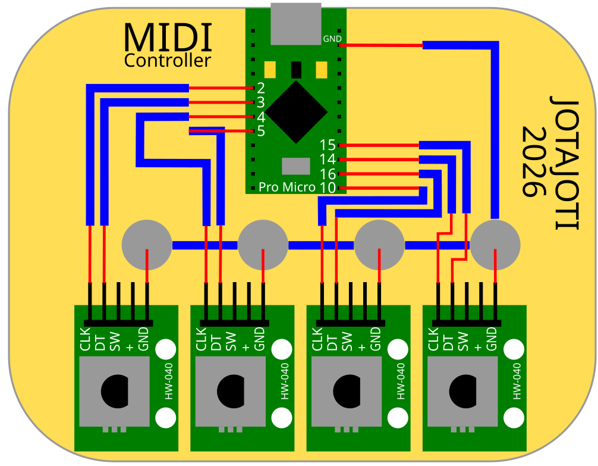
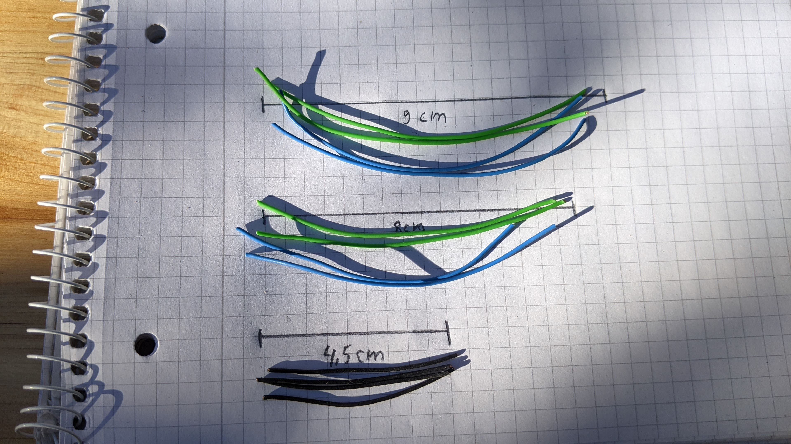
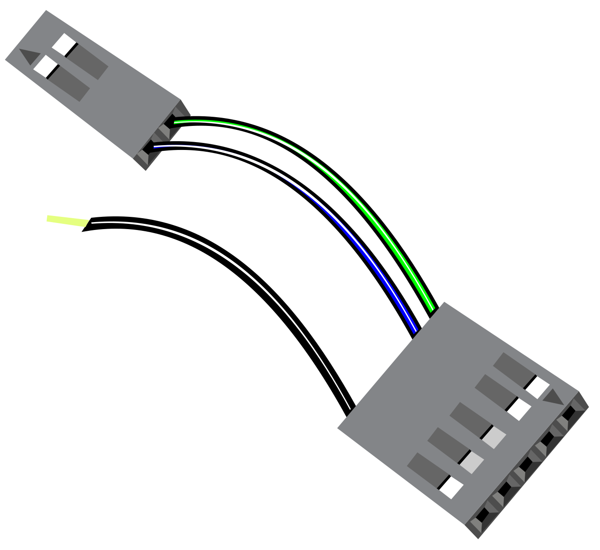

Holzbrettchen per Lasercutter oder ausgedrucktem Schaltplan vorbereiten.
Sketch auf Arduino flashen
Kabel mit Dupont Steckern versehen
Reiszwecken anbringen und per angelöteten Kabeln verbinden
Bauteile mit Klebepads auf dem Brettchen platzieren
Kabel anlängen und mit Dupont Steckern versehen
Alles nach Schaltplan verbinden
Ausfühliche Anleitung
Schritt 1: Die "Platine"

Da dies ein Bastelprojekt ist, dass mit minimalem aufwand und Materialkosten umgesetzt werden kann,
ist die Platine nicht professionell hergestellt. Stattdessen wird ein Brettchen verwendet,
auf dem die Bauteile mit Klebepads befestigt werden.
Die Bauteile werden mit Klingeldraht mit angecrimpten Dupont Steckern verbunden.
Das Brettchen kann entweder gelasert werden, oder man druckt sich den Schaltplan in Originalgröße
aus, und klebt ihn auf.
Schaltplan als PDF Schaltplan als Lasercuttervorlage für Lightburn Schaltplan als SVG
Schritte 2: Arduino Programmieren
Dieser Schritt ist nur notwendig, wenn der Arduino noch nicht mit dem MIDI Controller Programm geflasht
wurde. Beim JOTAJOTI Workshop werden die Arduinos bereits mit dem Programm geflasht,
so das dieser Schritt übersprungen werden kann.
Installiere die Arduino IDE, falls noch nicht geschehen. Hier gehts zum Download.
MIDIUSB-Bibliothek installieren:
Gehe in der Arduino IDE auf Werkzeuge -> Bibliotheken verwalten... (oder Strg + Umschalt + I).
Suche nach MIDIUSB (von Arduino)
Klicke auf Installieren.
AVR-Boardcore aktualisieren:
Gehe auf Werkzeuge -> Board -> Boardverwalter...
Suche nach Arduino AVR Boards.
Klicke bei diesem Eintrag auf Aktualisieren (oder wähle die neueste Version aus).
Kopiere den Code in die Arduino IDE und wähle das richtige Board (Arduino Micro)
und den richtigen Port aus.
Klicke auf Hochladen
Code:
#include
USBMIDI_Interface midi;
// CCAbsoluteEncoder führt die Werte von 0 bis 127 intern nach und sendet absolute MIDI-Werte.
// Syntax: {{Pin_A, Pin_B}, CC_Nummer, Pulse_Pro_Schritt}
CCAbsoluteEncoder encoders[] = {
{{3, 2}, 10, 4}, // Encoder 1 -> CC 10
{{5, 4}, 11, 4}, // Encoder 2 -> CC 11
{{10, 16}, 12, 4}, // Encoder 3 -> CC 12
{{15, 14}, 13, 4}, // Encoder 4 -> CC 13
};
// Die Drucktaster (SW) der Encoder 1 bis 4 ---
CCButton encoderSwitches[] = {
{6, {14, CHANNEL_1}}, // Switch 1 -> CC 14
{7, {15, CHANNEL_1}}, // Switch 2 -> CC 15
{A0, {16, CHANNEL_1}}, // Switch 3 -> CC 16
{A1, {17, CHANNEL_1}}, // Switch 4 -> CC 17
};
//Zusatzencoder als unendlicher Drehgeber für den VFO in UBER SDR
CCRotaryEncoder infencoders[] = {
{{9, 8}, 18, 4}, // Encoder 5 -> CC 18
};
void setup() {
Control_Surface.begin();
}
void loop() {
Control_Surface.loop();
}
Schritt 3: Reiszwecken
Drücke nun die vier Reiszwecken an an die vorgesehenen Stellen auf der Platine.
Sollte das Brettchen zu dünn sein, schneide die herausstehenden Spitzen auf der Rückseite
mit dem Seitenschneider ab, sodass die Reiszwecken nicht mehr herausstehen.
Verzinne dann alle viel Reiszwecken mit Lötzinn. Halte dazu den Lötkolben einige
Sekunden auf die Reiszwecke, sodass diese heiß wird.
Führe dann das Lötzinn an die Reiszwecke, sodass diese verzinnt wird.
Verbinde dann die Reiszwecken mit keinem kurzen schwarzen Kabel.
Schritt 4: Kabel vorbereiten
Nehme den Klingeldraht und schneide folgende Längen und isoliere jeweils
beide Ende mit der Abisolierzange ab:
2x 9cm,grün
2x 9cm,blau
2x 8cm,grün
2x 8cm,blau
4x 4,5cm,schwarz
1x 9cm,schwarz

Crimpe nun die Dupont Stecker an beide Kabelenden der grünen und blauen Kabel.
Die alle schwarzen Kabel bekommen nur einen Stecker. Die andere Seite wird direkt
an die Reiszwecken gelötet.
Nimm hierzu die Metallhülse und stecke sie in die Crimpzange, so dass sie direkt
an der kleinen Stufe in der Zange anliegt. Schieße dann die Crimpzange vorsichtig, so dass
die Metallhülse leicht zusammengedrückt wird. Stecke dann das Kabelende in die Metallhülse,
so dass der Draht in der Metallhülse liegt. Schieße dann die Crimpzange
vollständig.
Baue nun vier Kabelbäume zusammen, die jeweils aus einem grünen, einem blauen und einem schwarzen Kabel bestehen.

Alles zusammenbauen
Klebe nun mit Hilfe der Klebepads die vier Drehimpulsgeber und den Arduino an die richtigen
Stellen direkt auf die Platine.
Löte dann die vier offen schwarzen Kabel der Kabelbäume an die Reiszwecken.
Verbinde dann die Kabelbäume mit den entsprechenden Anschlüssen:
Arduino Pin
Drehimpulsgeber Pin
2
DT 1
3
CLK 1
4
DT 2
5
CLK 2
10
DT 3
16
CLK 3
14
DT 4
15
CLK 4
GND
Reiszwecken
Testen und Fehler beheben
Anschließen
Wenn du alles richtig verbunden hast, kannst du den Arduino über das USB Kabel an den Computer
anschließen. Die beiden roten LEDs auf dem Arduino sollten nun leuchten.
Funktionstest
Gehe auf https://www.midimonitor.com/
und klicke auf "Start Monitoring".
Drehe nun die Drehimpulsgeber. Wenn alles richtig verbunden ist, sollten nun die Werte auf der Webseite angezeigt werden.
Wenn nicht, überprüfe die die Kabelverbindungen.
Kontrolliere ob:
Die Kabel in den richtigen Anschlüssen stecken
Das Kabel an GND angeschlossen ist
Prüfe mit einem Durchgangsprüfer ob alle Reiszwecken korrekt verbunden sind.
Fehlerbehebung
Problem
Lösung
Die Werte wechseln nur zwischen 0 und 1
Überprüfe die Kabelverbindungen Ein Kabel muss in CLK und eins in DT stecken
Wenn man nach Rechts dreht werden die Werte kleiner
Die CLK und DT Kabel sind vertauscht
Es passiert gar nichts
Das GND Kabel ist nicht korrekt angeschlossen
Was kann man jetzt damit machen?
Jede Software die MIDI unterstützt kann nun mit dem Controller gesteuert werden.
Ursprünglich war MIDI für die Steuerung von Musikinstrumenten gedacht.
Inzwischen gibt es aber auch viele andere Anwendungen, die MIDI unterstützen.
So kann man z.B. auch mit dem Controller Spiele steuern, oder damit Funkgeräte bedienen.
Erweiterung für Funkamateure und Leute die noch mehr damit machen wollen
Der oben stehende Code kann mehr als nur die vier Encoder als Dreknopf auswerten.
Zusätzlich hat jeder Drehknopf eine weitere Funktion:
Man kann darauf drücken und damit einen weiteren MIDI-Befehl auslösen.
Damit kann man z.B. Dinge ein und ausschalten, oder zwischen verschiedenen Modi umschalten.
Bei UBER SDR kann man damit z.B. zwischen verschiedenen Frequenzbändern umschalten.
Um diese Funktion nutzen zu können, muss man nur 4 weitere Kabel ca. 10cm länge mit
Dupont Steckern
ausstatten. Die eine Seite wird jeweils an einen Encoder
an den Pin "Sw" (Switch) angeschlossen an die andere kommt ein einzelner Stecker,
der am Arduino an die Pins 6, 7, A0 und A1 angeschlossen wird
Die vier Encoder senden beim Drehen nur feste Werte zwischen 0 und 127.
Wenn man aber bei Uber SDR die Frequenz einstellen will, ist das nicht so praktisch.
Mann kann immer nur einen winzigen Frequenzbereich einstellen.
Was man braucht ist ein unendlicher Drehgeber,
der immer weiter dreht und damit die Frequenz immer weiter hoch oder runter stellt.
Deswegen ist im Code oben noch ein weiterer Encoder vorgesehen, der an die Pins 8 (DT)
und 9 (CLK) sowie GND angeschlossen wird.
Dieser kann in Uber SDR z.B. der Funktion "encoder (100Hz steps)"
zugeordnet und dann als Frequenzrad verwendet werden.
Eine weitere Anwendung wäre die DJ App Beatport. Dort kann über den unendlichen Drehgeber
der virtuelle Plattenteller zum scratchen bewegt werden.
{kind=link}